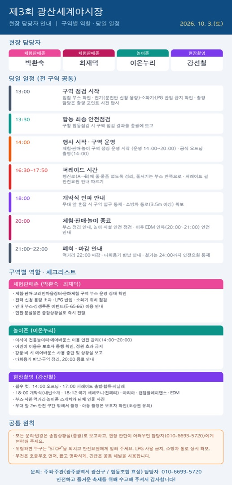

부스 · 구역 운영자
현장 담당자 안내
체험판매존 · 놀이존 · 현장촬영

이미지를 누르면 크게 볼 수 있고, 길게 눌러 저장할 수 있습니다.
10월 3일(토) 행사에 구역별 현장 담당으로 함께해 주시는 분들께 역할과 당일 일정을 안내드립니다. (첨부 이미지 참고)
현장 담당자
- 체험판매존: 박환숙, 최재덕
- 놀이존: 이온누리
- 현장촬영: 강선철
당일 일정 (전 구역 공통)
- 13:00 구역 점검 시작: 입점 부스 확인, 전기(분전반 신청 용량)·소화기·LPG 반입 금지 확인 (촬영 담당은 촬영 포인트 사전 답사)
- 13:30 구청 합동 최종 안전점검: 구역 점검 결과를 총괄에 보고
- 14:00 행사 시작·구역 운영 (체험·판매·놀이 운영 14:00~20:00) / 공식 오프닝 촬영
- 16:30~17:50 퍼레이드 시간: 행진로(A→B)에 줄·물품이 없도록 정리하고, 줄서기는 부스 안쪽으로 안내해 주세요. 퍼레이드 길은 안전요원 안내에 따릅니다.
- 18:00 개막식 인파 안내: 무대 앞 혼잡 시 구역 입구를 통제하고 소방차 통로(3.5m 이상)를 확보해 주세요.
- 20:00 체험·판매·놀이 종료: 부스 정리 안내, 놀이 시설 안전 점검, 이후 EDM 인파(20:00~21:00) 안전 안내
- 21:00~22:00 폐회·마감 안내: 먹거리 22:00 마감, 다회용기 반납 안내, 철거는 24:00까지 안전요원 통제 하에 진행
구역별 역할
[체험판매존 – 박환숙, 최재덕]
- 체험·판매·고려인마을장터·문화체험 구역 부스 운영 상태 확인
- 전력 신청 용량 초과, LPG 반입, 소화기 위치 점검
- 안내 부스·상생쿠폰 이벤트(E-65·66) 이용 안내
- 민원·분실물은 종합상황실로 즉시 전달
[놀이존 – 이온누리]
- 아시아 전통놀이터·에어바운스 이용 안전 관리 (14:00~20:00)
- 어린이 이용은 보호자 동행 확인, 정원 초과 금지
- 강풍·비 시 에어바운스 사용 중단 및 상황실 보고
- 다회용기 반납·구역 정리, 20:00 종료 안내
[현장촬영 – 강선철]
- 필수 컷: 14:00 공식 오프닝, 17:00 퍼레이드 출발·합류·피날레
- 18:00 개막식(내빈소개, 18:12 국기 세레모니·컨페티), 슈퍼 마리아, 랜덤플레이댄스, DJ 춘디 EDM
- 부스·시민·먹거리·놀이존 스케치와 단체 인물 사진
- 무대 앞 2m 안전 구간 밖에서 촬영하고, 아동 촬영은 보호자를 확인해 주세요. (초상권 유의)
공통 원칙
- 모든 문의·변경은 종합상황실(총괄)로 보고하고, 현장 판단이 어려우면 담당자(010-6693-5720)에게 연락해 주세요.
- 위험하면 누구든 “STOP”을 외치고 안전요원에게 알려 주세요. LPG 사용 금지, 소방차 통로 상시 확보.
- 무전은 호출부호를 먼저 말하고 짧고 명확하게, 긴급은 공통 채널을 사용합니다.
수고해 주셔서 감사합니다. 안전하고 즐거운 축제가 되도록 함께 힘써 주세요.